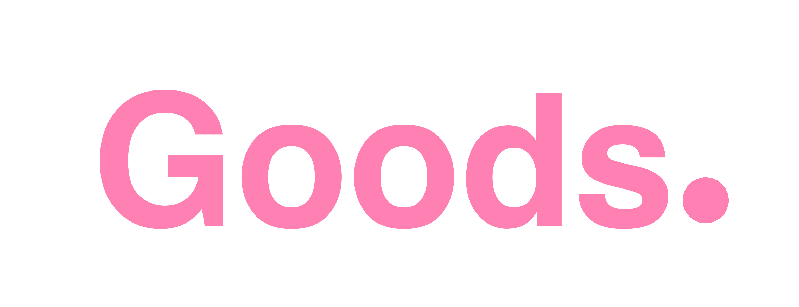
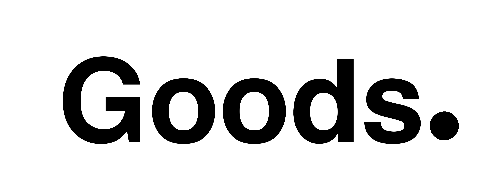

The making belongs on Country
Goods presses recycled-plastic beds on Country and builds the production so community owns it. Health hardware, local jobs, and assets that stay home.
📝 Notes for this section
Palette
Click any swatch to copy the hex. The public cost-story palette (hex) is the brand face; the app tokens (OKLCH) drive the UI. They drift today, so a single canonical cream + terracotta is a decision to land.
Public palette (the brand face)
App tokens (globals.css, OKLCH)
📝 Notes for this section
Type
Three real type roles: Poppins Medium is the wordmark/logo font; Georgia is the editorial display on the cost-story pages; system sans-serif is body. (layout.tsx also loads Inter + Playfair: decide which display is canonical and drop the rest. Poppins is NOT unused, it renders the logo.)
The making belongs on Country
A good bed can prevent heart disease
Built with communities, not for them
Body copy is plain, short, declarative system sans-serif. Lead with the person or the impact, then the spec. Real community language: deadly, around the fire, rocking up every day. Cite the source inline for any number.
📝 Notes for this section
Logo
The canonical mark is the Goods. wordmark set in Poppins Medium, with ON COUNTRY tracked beside or below. Charcoal on light, white on dark. Full SVG system at v2/public/brand/logos/ (live), so it scales to anything from a favicon to a billboard.
/logo.svg, not the wordmark. The real mark is this Poppins Goods. wordmark, and Poppins is loaded by the app to render it (so it is not an unused font). The brand guide's logo + type sections were built from the favicon and need this same fix.Stacked — Goods over ON COUNTRY
Inline — Goods. then ON COUNTRY
Shown in true Poppins. Heads-up: the source goods-inline-*.svg hard-place the round dot for the Helvetica fallback width, so rendered in Poppins it overlaps the "s". Source fix: nudge the circle right, or set the period as a Poppins glyph (these render fine as flat <img> on the site, where the fallback font is used).
Chip — compact (icons, watermarks)
Also in the pack
Transparent wordmarks to drop on photos: goods-stacked-black/white.svg, goods-inline-black/white.svg. See the live preview.html and README.
Specs (do not improvise)
Colour
#0A0A0A Charcoal
#FDF8F3 Cream
#FFFFFF White
Type · Poppins Medium 500. Goods letter-spacing -3 at display; ON COUNTRY letter-spacing +8, all caps. Fallback Helvetica Neue → Arial.
Clear space · minimum padding around the mark = the cap-height of the word Goods.
Don'ts
- Don't stretch, skew, recolour, drop-shadow or outline the wordmark.
- Don't put it on busy photography without a tint layer.
- Don't rebuild it in Canva, use the SVGs.
- Don't add the legacy cream-square rule line to the wordmark.
- Don't imitate Aboriginal-style design inside the mark.
History
The wordmark held; the colour evolved. The earlier brand ran a pink Goods. mark before the current charcoal / cream / white system. Provenance: scripts/generate_logo_variations.py + create_logo_image.py; git f95c2e0 (placeholder brand pack) then bab9272 (wordmark pack).


📝 Notes for this section
Build the set, element by element
Real photos are the canonical brand assets. We develop an AI device only where there is a genuine gap, one element at a time, until the set is one we are happy with. Mark a call on each.
Line-illustration element set (matches the icons)
📝 Notes for this section
Photo library
Real, on-Country, consent-context photography (live on the site), grouped by zone. This is the spine: real named people over stock, voice plus face plus number on every beat.
📝 Notes for this section
Bring in EL media and tag it right
Empathy Ledger is the source of truth for community photos, video and voices. The site pulls it server-side and falls back to local content. The mechanism for "use this asset here" is a content placement: a named slotKey mapped to an EL media asset, with a placementType, tags, and consent fields.
getSlotUrl('slot-key'); consent gates (syndication_enabled, not archived, not withdrawn) decide what is allowed to show.
Slot planner. Draft the brand slots below: pick the asset, the placement type, the tags and consent. Then Export EL slot config (top right) to hand the curator the exact set to wire up in Empathy Ledger.
| Asset | Slot key | Area | Type | Tags (comma) | Elder ✓ | Sensitivity |
|---|
▾ Preview EL slot config (JSON)
📝 Notes for this section
Video
Goods' video set (backgrounds + testimony + assembly). Posters are live; the full MP4s play from your local public/video/ when this board is opened from the repo. In EL these are mediaType: video with videoLink / videoEmbedCode and the same consent fields.
📝 Notes for this section
Icon system (hand-built SVG)
Rebuilt as real SVG, not AI raster: one consistent stroke weight on a 24px grid, terracotta line with sage accents, rounded caps. Scalable, recolourable, perfectly aligned. Concrete on-Country subjects only, no dot-painting or Aboriginal-style motifs. A first pass to react to, not a final set.
Tell me which read wrong and how (weight, metaphor, what to add/drop) and I will re-cut them. When the set is right I export them as individual SVG files for the repo.
📝 Notes for this section
Voice
Pillars
Lexicon
Use
Avoid
📝 Notes for this section
Specific photo, or a new artistic set?
For each area, decide the brand device: lean on a specific real photo, or develop a cohesive artistic set (a unified illustrated treatment) to use across all areas. Pick a direction per area, and copy the generation prompt to spin up an artistic option.